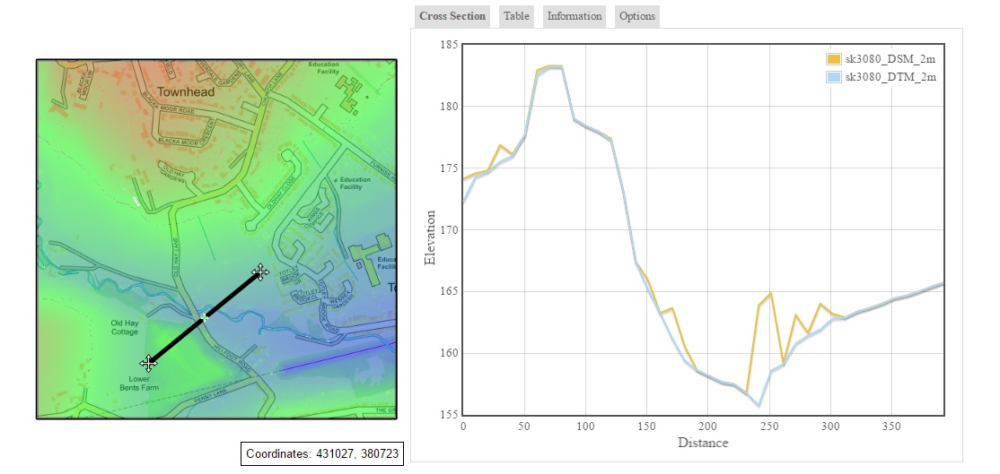
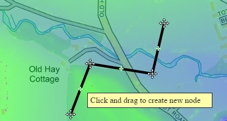
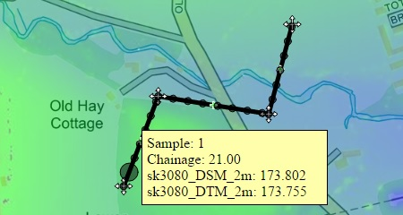
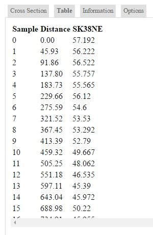

Client side raster grids in OpenLayers
The Grid2OpenLayers tool will covert gridded data into an interactive map. This is not new in itself, there are many technologies out there which can produce simmilar results however they all relay on server side scripts. Those that don't use bespoke file formats which browsers cannot access from a local drive without emulating a server. The outputs of the Grid2OpenLayers tool are entirely client side, they do fetch other data, but only from arrays held within javascript files, therefore the outputs can be run from any hard drive or webserver with no need for server side scripts. There is a working executable in the bin/debug folder when you download the source.
There is no theroretical limit to the side of the input ASCII, however memory contraints will often prevent grids above two or three hundered MB from processing. (tested on a 300MB ASCII). To better understand how the tool works use the 'More Info' button in the tools settings (cog icon)
Inputs
The tool only requires a simple ASCII grid file, this can be created from many other formats using standard GIS software such as ArcGIS, QGIS or MapInfo. Alternativly ASCII grid files can often be downloaded directly from from providers such as the Environment Agency or Ordnance Survey
Outputs
Below is an image of a standard output from the tool. The cross section on the map is linked to the profile graph on the right. Moving the cross section triggers an update to the graph and data tables.
Have a look at the working example at this link (you must move the cross section to generate the graph)The data used in the example can be downloaded here.
The map can be panned and zoomed just like any other OpenLayers map, only it is restricted tot he left hand side of the page. The right hand side is dedicated to the profile data, this can be shown as a graphical cross section or a data table. When multiple overlapping grids have been used it will display a sepate profile line for each.
Cross Sections
The cross sections do not have to be simple lines, drag the centre node in the line to create a multi-part cross section.
Sample Points
The exact locations of the sample points can be plotted together with thier values.
Data Table
The data table will display values for each ASCII grid specified in the tool when it was ran, these can be copy/pasted to excel.